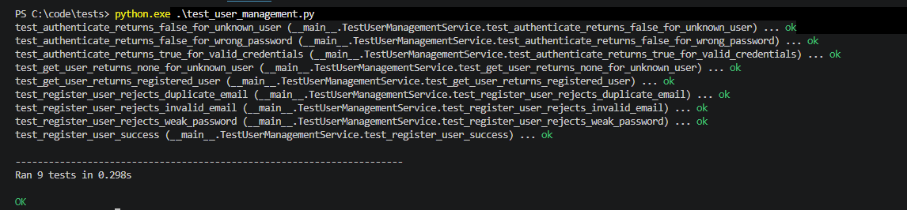

Advanced Object-Oriented Design and Programming
Unit Summary
Unit 10 focuses on Test-Driven Development (TDD) and unit testing as approaches for improving software quality, reducing defects and supporting maintainability. The unit introduces the idea of defining expected behaviour through tests before completing the implementation, then refining the code while preserving tested behaviour.
The practical activity applies these principles to a secure e-learning platform using object-oriented software architecture. The case study combines architectural design, implementation, unit testing, refactoring and security considerations within a single development exercise.
Learning Outcomes
By the end of this unit, I was able to:
- Explain the principles and benefits of Test-Driven Development (TDD).
- Recognise the importance of unit testing in improving software quality and reducing defects.
- Apply TDD to an object-oriented software component.
- Write unit tests for public methods and relevant failure conditions.
- Refactor internal code while preserving tested behaviour.
- Recognise how modular architecture can improve testability and maintainability.
Case Study Activity
The case study required the design, implementation and testing of a secure e-learning platform. I selected layered architecture because separating presentation, business logic and data access responsibilities provides a clear structure for maintaining and extending the system. It also supports security by keeping authentication and business rules separate from the presentation and data-storage responsibilities.
The proposed business modules are User Management, Course Management and Enrolment Management. This modular structure allows individual parts of the platform to be developed and modified independently, while the separation between layers provides a foundation for scaling components as the system grows.
For the practical implementation, I selected the User Management module. The final UserManagementService provides register_user(), authenticate() and get_user().
High-Level Architecture Design
Figure 1 presents the proposed three-layer architecture for the e-learning platform. For this formative activity, only the User Management module was implemented and tested. Course Management and Enrolment Management remain part of the proposed architecture.

Note: Elements shown in red are part of the proposed architecture and are included for illustration only. They were not implemented in the current activity. The practical implementation focused on the User Management module.
Artefacts
| Artefact | Purpose |
|---|---|
| Case Study README | Architecture, implementation, security and testing explanation |
| User Management Code | Final object-oriented implementation |
| Red-Phase User Management Code | Pre-implementation Red-stage example |
| Unit Tests | Tests for all public methods |
| Red-Phase Test | Focused failing registration test |
| Test Results | Successful test execution image |
{kind=link}
Secure User Management
The implementation validates email addresses, enforces a minimum 12-character password policy, prevents duplicate registration and stores password hashes generated using PBKDF2-HMAC-SHA256 with a unique random salt. Authentication uses constant-time comparison when verifying password hashes rather than comparing plaintext passwords.
TDD and Unit Testing
The test suite defines the expected behaviour for all three public methods. It includes successful registration and authentication as well as failure conditions such as invalid email addresses, weak passwords, duplicate users, incorrect passwords and unknown users.
The final suite contains nine unit tests, and all tests pass successfully. In the final implementation, internal responsibilities such as email normalisation, password hashing and password verification are separated into focused private helper methods.
Meszaros (2007) identifies ease of maintenance as an important goal of automated testing and discusses organising and refactoring tests to keep them understandable and maintainable as the system evolves. In this activity, the tests are organised around the public behaviours of register_user(), authenticate() and get_user().
Sample of the TDD Cycle
To demonstrate the TDD sequence, register_user() is used as a focused example of the Red–Green–Refactor cycle. The sequence reflects the test-first approach described by Beck (2002), where failing tests are followed by working implementation and refactoring.
Red – Failing Test
A single registration test was used to demonstrate the Red stage of TDD. The test was executed before the required registration behaviour was implemented. It failed because register_user() returned None rather than the expected User object, showing that the required behaviour had not yet been satisfied.

Green – Passing Implementation
The required registration behaviour was then implemented and the tests were run again. The final execution shows all nine unit tests passing successfully, confirming that the implemented User Management behaviour satisfies the test suite.

Refactor – Improve Structure Without Changing Behaviour
After the required behaviour was working, the internal implementation was reorganised into focused private helper methods for email normalisation, password hashing and password verification. The full test suite was then run again to confirm that these internal changes did not alter the expected public behaviour. The final passing test results provide validation that the refactored implementation still satisfies the existing tests.
Reflection
This activity helped me understand TDD as more than a testing technique. Defining expected behaviour first encouraged me to consider both successful and failure conditions before completing the implementation.
The Red–Green–Refactor exercise showed how tests can guide development and support safer refactoring. This is particularly useful in security-related software because behaviours such as input validation and authentication failures can be tested explicitly and rechecked after code changes, helping to reduce the risk of security regressions.
The activity also reinforced the relationship between modular design and testability. Focusing on the User Management service made its behaviour easier to test independently, while refactoring showed how internal code can change without altering expected behaviour. This reflects Freeman and Pryce (2009), who show how tests can help guide software behaviour and object-oriented structure.
Professional Skills Development and Action Plan
This activity strengthened my ability to use unit tests throughout development rather than only as a final check.
In future development work, I intend to follow a more structured testing plan by defining expected behaviour and test cases early, covering both successful and failure conditions, and rerunning tests after code changes or refactoring. This will help me make testing a consistent part of the development process rather than an activity performed only at the end.
References
- Beck, K. (2002) Test Driven Development: By Example. Boston, MA: Addison-Wesley.
- Freeman, S. and Pryce, N. (2009) Growing Object-Oriented Software, Guided by Tests. Boston, MA: Addison-Wesley.
- Meszaros, G. (2007) xUnit Test Patterns: Refactoring Test Code. Boston, MA: Addison-Wesley.